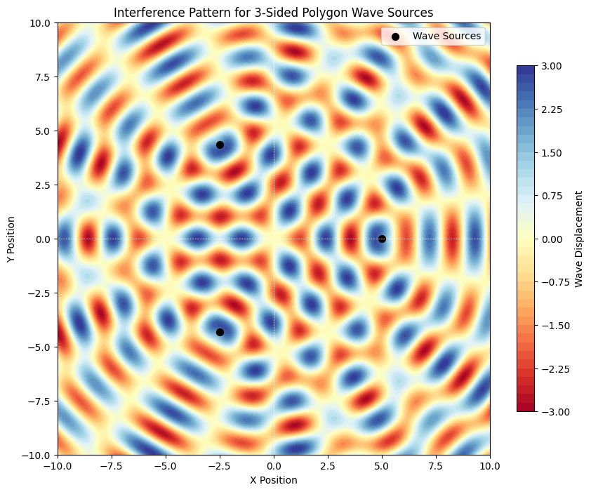

Problem 1
Interference Patterns on a Water Surface
1. Understanding Interference Patterns
When waves from multiple sources interact, they create constructive and destructive interference. The resulting wave displacement is given by:
\[
\eta_{\text{sum}}(x,y,t) = \sum_{i=1}^{N} A \sin \left( k r_i - \omega t \right)
\]
where: - \(A\) is the wave amplitude, - \(k = \frac{2\pi}{\lambda}\) is the wave number, - \(\omega\) is the angular frequency, - \(r_i\) is the distance from the \(i^{th}\) source to \((x,y)\).
2. Numerical Simulation
The following Python script simulates the interference patterns created by point sources arranged in a regular polygon.
import numpy as np
import matplotlib.pyplot as plt
# Parameters
num_sides = 3 # Number of polygon sides (e.g., 3 for triangle)
amplitude = 1.0 # Amplitude (A) of waves
wavelength = 2.0 # Wavelength (λ)
radius = 5.0 # Radius of polygon (distance from center to sources)
grid_size = 10.0 # Size of simulation grid
time = 0 # Time instant for visualization
# Generate polygon source coordinates
angles = np.linspace(0, 2*np.pi, num_sides, endpoint=False)
sources_x = radius * np.cos(angles) # X-coordinates of sources
sources_y = radius * np.sin(angles) # Y-coordinates of sources
# Create grid for wave simulation
x = np.linspace(-grid_size, grid_size, 500)
y = np.linspace(-grid_size, grid_size, 500)
X, Y = np.meshgrid(x, y)
# Compute wave displacement at each grid point
def wave_displacement(x, y, t):
total = 0.0
for sx, sy in zip(sources_x, sources_y):
distance = np.sqrt((x - sx)**2 + (y - sy)**2)
total += amplitude * np.sin(2 * np.pi * distance / wavelength - t)
return total
Z = wave_displacement(X, Y, time)
# Plot interference pattern
plt.figure(figsize=(10, 8))
plt.contourf(X, Y, Z, levels=50, cmap='RdYlBu')
plt.colorbar(label='Wave Displacement', shrink=0.8)
plt.scatter(sources_x, sources_y, c='black', s=50, marker='o', label='Wave Sources')
plt.title(f'Interference Pattern for {num_sides}-Sided Polygon Wave Sources')
plt.xlabel('X Position')
plt.ylabel('Y Position')
plt.xlim(-grid_size, grid_size)
plt.ylim(-grid_size, grid_size)
plt.axhline(0, color='white', linestyle='--', linewidth=0.5)
plt.axvline(0, color='white', linestyle='--', linewidth=0.5)
plt.gca().set_aspect('equal')
plt.legend()
plt.show()
